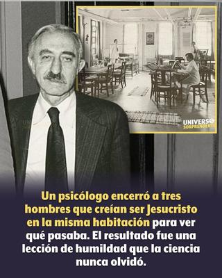

En 1959, en un hospital psiquiátrico de Michigan, Estados Unidos, se desarrolló un experimento que hoy resulta tan fascinante como perturbador. No porque prometiera una cura milagrosa, sino porque terminó revelando algo mucho más profundo y universal: la extraordinaria resistencia de las creencias absolutas frente a la evidencia, ya sea en el terreno de la patología mental o en el de la fe religiosa. El protagonista fue el psicólogo social estadounidense de origen polaco Milton Rokeach, cuyo nombre original era Mendel Rokicz (1918-1988), quedando su experimento inmortalizado en su libro The Three Christs of Ypsilanti (Los tres Cristos de Ypsilanti)[1].


Rokeach reunió en el Hospital Estatal de Ypsilanti (ciudad ubicada en el condado de Washtenaw, Míchigan), a tres hombres diagnosticados con esquizofrenia paranoide que compartían una convicción idéntica, cada uno creía ser Jesucristo: Clyde, un granjero anciano; Joseph, un escritor vi0lento; y Leon, joven veterano que realmente parecía ser un mesías bíblico. Ninguno de los tres se consideraba un profeta ni enviado divino, sino el único y verdadero «Cristo».
La hipótesis del investigador parecía razonable desde una lógica ingenua: si se confronta a una persona con otras dos que sostienen exactamente la misma creencia incompatible, la contradicción debería forzarlos a una revisión de su idea delirante. En otras palabras, la realidad —o al menos una versión socialmente compartida de ella— debía imponerse.
Sin embargo, nada de eso ocurrió. Durante casi dos años los tres hombres convivieron, discutieron y polemizaron. Pero aquí aparece el dato más revelador del experimento: ninguno de los tres admitió jamás que alguno de los otros pudiera ser el verdadero «Cristo». Cada uno protegió su identidad mesiánica mediante elaboradas racionalizaciones: los otros eran impostores, máquinas sin alma, cuerpos controlados a distancia. Así que el delirio no se quebró; se sofisticó.
Desde una perspectiva psicológica —y también laica— este punto es crucial. El comportamiento de los tres pacientes esquizofrénicos recuerda de forma inquietante el de las sectas cristianas entre sí. Católicos, evangélicos, mormones, testigos de Jehová y cientos de denominaciones más comparten un núcleo doctrinal, pero ninguna admite jamás que otra posea la «verdadera» interpretación.
La lógica es idéntica a la del delirio clínico observado por Rokeach:
«Mi creencia es la única verdadera.»
«Las otras versiones son errores, desviaciones o engaños.»
«La contradicción no invalida mi fe; la refuerza.»
Y es que, desde el punto de vista cognitivo, la fe religiosa dogmática funciona como un sistema cerrado muy similar a un delirio: es inmune a la evidencia contraria, genera explicaciones ad hoc, y se protege a sí misma de la falsación.
La diferencia principal no es, pues, estructural, sino social: una creencia se considera patológica sólo cuando la sostiene un individuo aislado; pero se considera religión cuando la sostiene un grupo numeroso y culturalmente legitimado. Y aquí cobra vigencia aquella frase atribuida al escritor y filósofo estadounidense Robert M. Pirsig (1928-2017) en su libro «Zen y el arte del mantenimiento de la motocicleta»: «Cuando una persona sufre de un delirio, se le llama locura. Cuando muchas personas sufren de un delirio, se le llama religión.» Es decir, la diferencia entre una creencia personal delirante (locura) y una creencia religiosa, parece ser, principalmente, el número de personas que la comparten. O sea, una creencia irracional e individual se considera locura, pero si la comparten muchas personas, se convierte en una religión o fe.
Pero volvamos al experimento de Ypsilanti, en realidad no curó a nadie. Peor aún, con el paso del tiempo Rokeach, frustrado, comenzó a manipular a sus pacientes, enviándoles cartas falsas de amores imaginarios, e incluso contratando a una asistente para que sedujera a Leon, con la idea de que el deseo humano los «despertaría». Pero cuando Leon descubrió la mentira, dijo: «La verdad es mi amiga. No tengo otros amigos».
Desde la psicología moderna, por supuesto, esto constituye una clara transgresión de principios éticos básicos: autonomía, no maleficencia, y respeto por la dignidad del paciente. Años después, en el epílogo añadido a su libro, el propio Rokeach reconoció su error con honestidad poco frecuente en la historia de la psicología. Admitió que en aquel hospital no había habido tres dioses, sino cuatro: los tres pacientes… y él mismo, jugando a ser una divinidad omnipotente que manipulaba destinos en nombre de la ciencia.
Sin embargo, desde una perspectiva laica y crítica de las religiones, el caso de Ypsilanti plantea una pregunta incómoda: ¿Qué diferencia realmente a un delirio religioso de una fe religiosa socialmente aceptada? Ambas comparten características clave:
Convicciones absolutas e incuestionables.
Resistencia extrema a la evidencia contraria.
Construcción de identidades basadas en relatos sobrenaturales.
Reinterpretación constante de la realidad para proteger la creencia.
Sin embargo, la psicología no diagnostica las religiones como trastornos mentales por razones clínicas, éticas y sociales, pero no porque sus mecanismos cognitivos sean radicalmente distintos. En todo caso, el experimento de Rokeach mostró que la mente humana puede sostener una creencia falsa, incluso cuando la contradicción está sentada frente a ella, hablando y respirando.
Por tanto, podemos decir en conclusión, que el experimento de los Tres Cristos de Ypsilanti no fracasó: simplemente respondió a una pregunta distinta de la que Rokeach creía estar formulando. No demostró cómo curar delirios, sino cuán profundamente humanos son los sistemas de creencias absolutas.
Visto desde hoy, el estudio es una doble advertencia: por un lado, sobre los peligros éticos del poder científico sin autocrítica. Por el otro, sobre la fragilidad de la razón cuando se enfrenta a creencias identitarias, ya sean clínicas o religiosas.
Aquellos tres hombres nunca aceptaron que otro fuera «el verdadero Cristo». Así como las religiones tampoco aceptan que otra sea «la verdadera religión». La diferencia es que a unos los llamamos «pacientes», mientras que a las otras las llamamos «tradiciones sagradas»… Y quizá sea ésta la lección más inquietante de todas.
[Godless Freeman]
[Crédito de imagen: Universo Sorprendente]
Referencia:
Comentarios
Comments powered by Disqus